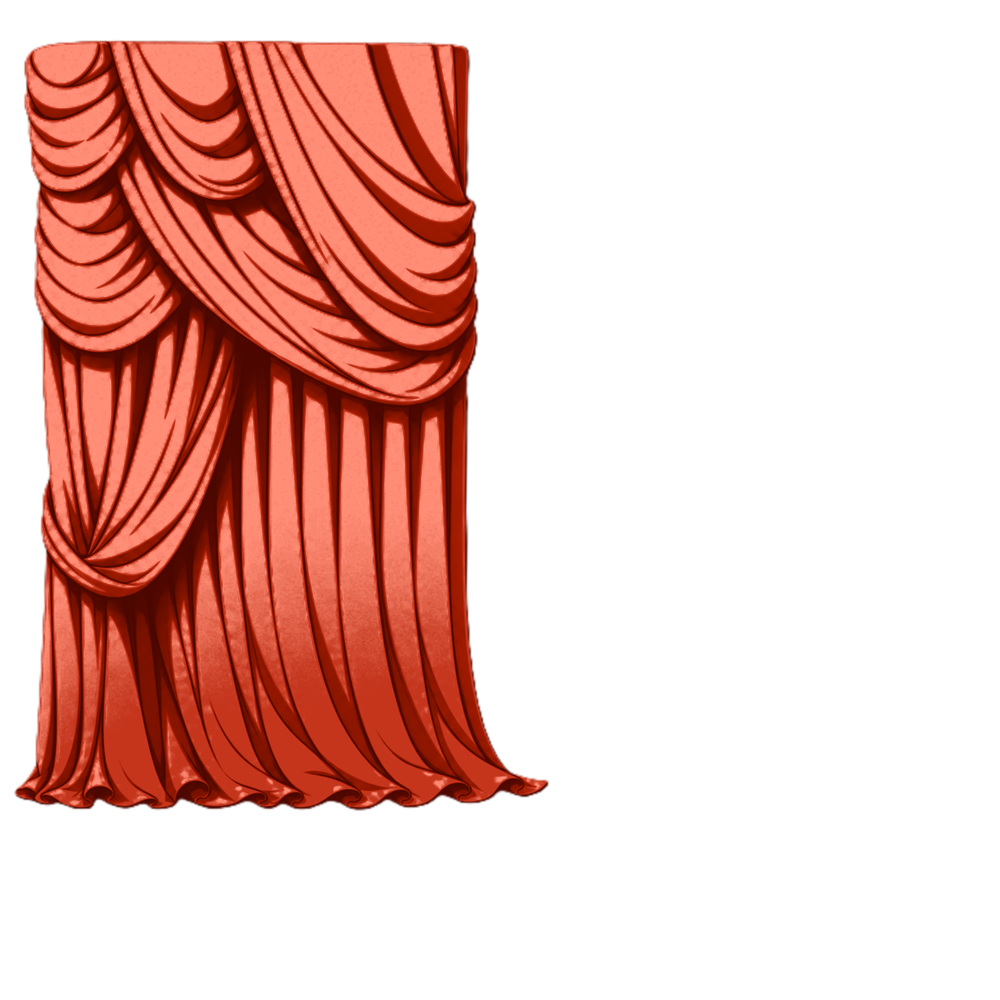
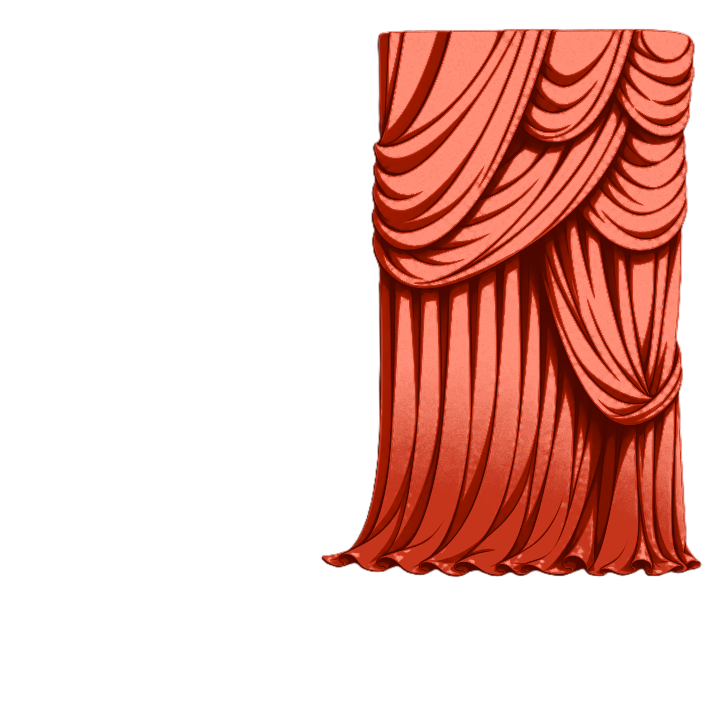
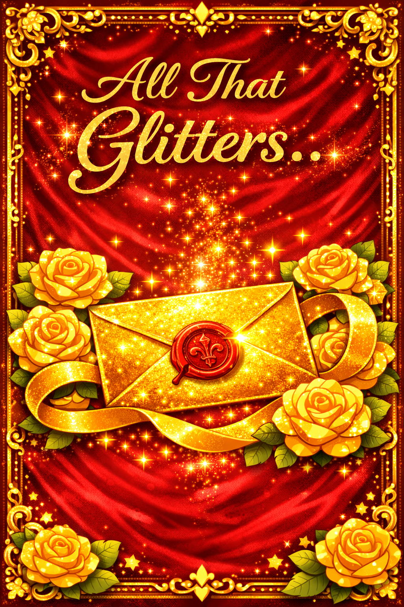
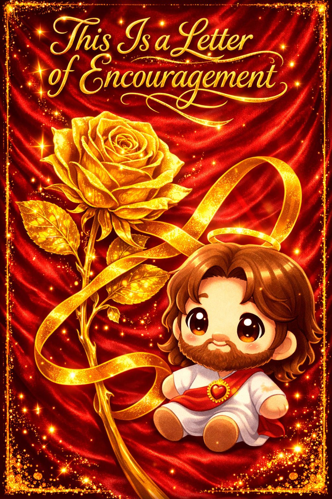
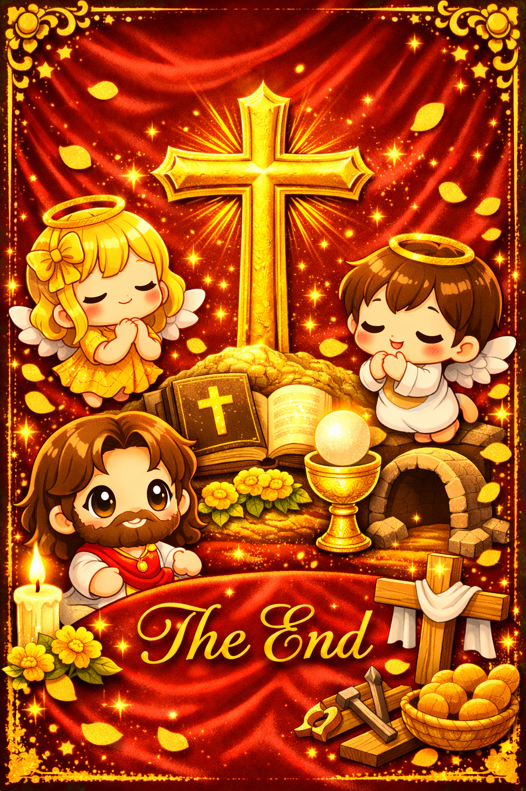

I wanted to send this letter of encouragement. Sorry had a pile of school projects so had to push this back, and then the holidays got
busy with travel. But after our K-D, I really wanted to follow through and write to you this.
color
Then i took you a Second K-D soooooo...
Hi its been some time i hope you've been having a great year so far. Its been a week or so i hope you had a great week. from our conversations i feel compelled to encourage you towards ministry can see you seem genuinely passionate about ministry. The main thing I noticed is that you have a heart for others and for serving. It truly looks like you are called toward it. Even your alt-plan nursing is something that you can help others.
John 21:15–17:
15 When they had finished eating, Jesus said to Simon Peter, “Simon son of John, do you love me more than these?” “Yes, Lord,” he said, “you know that I love you.” Jesus said, “Feed my lambs.” 16 Again Jesus said, “Simon son of John, do you love me?” He answered, “Yes, Lord, you know that I love you.” Jesus said, “Take care of my sheep.” 17 The third time he said to him, “Simon son of John, do you love me?” Peter was hurt because Jesus asked him the third time, “Do you love me?” He said, “Lord, you know all things; you know that I love you.” Jesus said, “Feed my sheep.”
My encouragement to you is to go all-in on ministry. God will provide—not necessarily what you want, but what you need to thrive. And what He provides may be better than what you’re afraid to give up. Even something like becoming a wealthy evangelist is not impossible if it is aligned with His purpose.
One conviction I also wanted to share is this: in life, many of our biggest problems are not truly difficult—they are team assignments we attempt to complete alone. Flipping one light switch isn’t hard. But if you had to flip two at the same time, and one was on the other side of the room, it would feel impossible. Ministry is not meant to be done solo.
PS. Good luck with nursing.
PPS. I'll be Praying for you.
